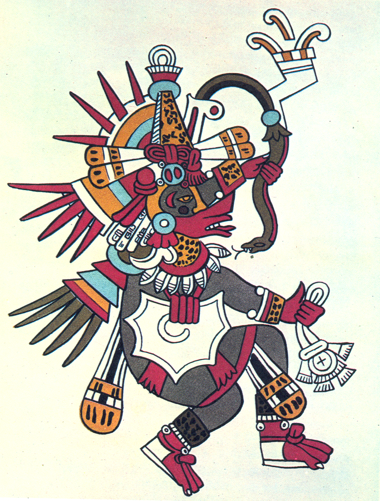

Quetzocoatl, a prominent Aztec god
Georgia now put Cherokee land on sale and moved militia in to crush any sign of Cherokee resistance. The Cherokees followed a policy of nonviolence, though their property was being taken, their homes were being burned, their schools were closed, their woman mistreated
In the White House now was James Polk, a Democrat, an expansionist, who, on the night of his inauguration, confided to his Secretary of the Navy that one of his main objectives was the acquisition of California. His order to General Taylor to move troops to the Rio Grande was a challenge to the Mexicans.
Howard Zinn, A People's History of the United States, pages 141 and 150
These examples highlight the blatant expansionism and imperialism of the United States. This is a practice which has led to an abundance of natural resources under the country's control, and allowed for rapid population growth into new territories. Due to this rapid growth, the per capita consumption in terms of food, water, land, and just about any resource imaginable, was and continues to be considerably higher than necessary or reasonable. This horrific use of resources demonstrates an egregious disregard for the environment and land that the people of this country inhabit, mirroring the disregard of Native Americans that inhabited the land beforehand, as well as their culture.